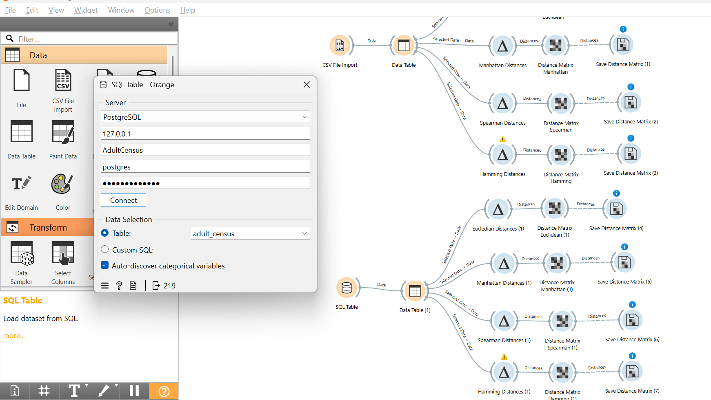

DATA PREPARATION — PERTEMUAN 3#
Studi Kasus: Iris + Data Campuran (Mixed-Type)#
Identitas Mahasiswa
Nama |
Moh Rafie Nazar J. |
NIM |
240411100003 |
Mata Kuliah |
Penambangan Data |
Pertemuan |
3 — Data Preparation |
Dokumen ini melanjutkan materi Data Preparation dalam kerangka CRISP-DM yang mencakup: identifikasi missing value, statistik deskriptif, encoding, scaling, pengukuran jarak, dan penanganan data campuran (mixed-type).
✅ Tugas Pertemuan 3#
Tugas yang Harus Diselesaikan
Berikut tiga tugas utama pada Pertemuan 3 beserta status penyelesaiannya:
No |
Tugas |
Status |
Keterangan |
|---|---|---|---|
1 |
Mengukur Jarak — ditempatkan di bawah bagian Data Understanding |
✅ Selesai |
Euclidean, Manhattan, Spearman, Hamming pada data Iris (CSV & SQL) — lihat Section 3.13–3.14 |
2 |
Buat/Cari Data Campuran — mengandung tipe ordinal, numerik, kategorikal, dan biner |
✅ Selesai |
Dataset Adult Census Income ( |
3 |
Lakukan Pengukuran Jarak pada Data Campuran tersebut |
✅ Selesai |
4 metrik jarak diterapkan di Orange pada data Adult Census Income — lihat Section 3.15.5 |
File Orange Workflow:
AdultCensus.owsFile SQL Database:
AdultCensus.sql
3.1 Konsep CRISP-DM#
CRISP-DM (Cross-Industry Standard Process for Data Mining) adalah metodologi standar dalam proyek data mining yang terdiri dari 6 fase berurutan:
No |
Fase |
Keterangan |
|---|---|---|
1 |
Business Understanding |
Memahami tujuan bisnis dan kebutuhan analisis |
2 |
Data Understanding |
Eksplorasi awal data, statistik deskriptif |
3 |
Data Preparation |
Pembersihan, transformasi, seleksi fitur |
4 |
Modeling |
Membangun model machine learning |
5 |
Evaluation |
Mengevaluasi performa model |
6 |
Deployment |
Implementasi model ke sistem nyata |
Pertemuan ini berfokus pada fase Data Preparation — fase paling kritis yang memakan 60–70% waktu proyek data mining.
3.2 Persiapan Lingkungan#
Sebelum memulai analisis, kita impor library yang dibutuhkan. Setiap library memiliki peran khusus dalam proses data preparation.
%matplotlib inline
import pandas as pd # manipulasi dan analisis data tabular
import numpy as np # komputasi numerik dan array
import matplotlib.pyplot as plt # visualisasi data
from sklearn.preprocessing import StandardScaler, LabelEncoder
from sklearn.metrics import pairwise_distances
Library |
Fungsi Utama |
|---|---|
|
Load CSV, manipulasi DataFrame, groupby, describe |
|
Operasi array, kalkulasi jarak manual |
|
Plot histogram, visualisasi distribusi |
|
Normalisasi fitur (mean=0, std=1) sebelum hitung jarak |
|
Konversi label kategorikal ke numerik |
|
Hitung distance matrix antar semua pasang data |
3.3 Memuat Dataset Awal#
Dataset dimuat kembali untuk memastikan seluruh proses preparation dilakukan pada data mentah yang konsisten.
df = pd.read_csv("IRIS.csv")
df.head()
Output df.head() — 5 baris pertama dataset Iris:
sepal_length |
sepal_width |
petal_length |
petal_width |
species |
|
|---|---|---|---|---|---|
0 |
5.1 |
3.5 |
1.4 |
0.2 |
Iris-setosa |
1 |
4.9 |
3.0 |
1.4 |
0.2 |
Iris-setosa |
2 |
4.7 |
3.2 |
1.3 |
0.2 |
Iris-setosa |
3 |
4.6 |
3.1 |
1.5 |
0.2 |
Iris-setosa |
4 |
5.0 |
3.6 |
1.4 |
0.2 |
Iris-setosa |
Dataset ini berisi 150 baris dan 5 kolom, terdiri dari 4 fitur numerik dan 1 kolom target kategorikal.
3.4 Penjelasan: Fitur vs Kelas (Target)#
Memahami perbedaan fitur dan kelas adalah dasar sebelum melakukan pemodelan supervised learning.
Fitur (features / attributes) = kolom input yang menjadi karakteristik bunga, digunakan sebagai variabel independen (X).
Kelas (class / label / target) = kolom output yang ingin diprediksi, merupakan variabel dependen (y).
Tabel Identifikasi Kolom Dataset Iris:
Kolom |
Tipe Data |
Peran |
Keterangan |
|---|---|---|---|
|
Numerik (float) |
Fitur |
Panjang kelopak luar / sepal (cm) |
|
Numerik (float) |
Fitur |
Lebar kelopak luar / sepal (cm) |
|
Numerik (float) |
Fitur |
Panjang mahkota bunga / petal (cm) |
|
Numerik (float) |
Fitur |
Lebar mahkota bunga / petal (cm) |
|
Kategorikal (string) |
Kelas (Target) |
Jenis bunga: setosa, versicolor, virginica |
✅ Kesimpulan: sepal_length, sepal_width, petal_length, petal_width → fitur.
Sedangkan Iris-setosa, Iris-versicolor, Iris-virginica → kelas/label.
Jika membuat kolom
species_encoded, itu hanya versi numerik dari kelas — bukan fitur baru.
Pembersihan Data#
3.5 Identifikasi Missing Value#
Identifikasi missing value adalah langkah pertama dan wajib dalam data preparation. Data yang memiliki nilai kosong dapat menyebabkan error pada algoritma atau hasil analisis yang bias.
3.5.1 Jumlah Missing per Kolom#
missing_count = df.isnull().sum()
missing_count
3.5.2 Persentase Missing per Kolom#
missing_percent = (df.isnull().mean() * 100).round(2)
pd.DataFrame({'missing_count': missing_count, 'missing_%': missing_percent})
Hasil Pengecekan Missing Value Dataset Iris:
Kolom |
Missing Count |
Missing % |
Status |
|---|---|---|---|
|
0 |
0.00% |
✅ Lengkap |
|
0 |
0.00% |
✅ Lengkap |
|
0 |
0.00% |
✅ Lengkap |
|
0 |
0.00% |
✅ Lengkap |
|
0 |
0.00% |
✅ Lengkap |
Dataset Iris tidak memiliki missing value, sehingga tidak diperlukan proses imputasi (pengisian nilai kosong).
3.5.3 Menampilkan Baris yang Memiliki Missing (jika ada)#
rows_with_missing = df[df.isnull().any(axis=1)]
rows_with_missing.head()
Statistik Deskriptif#
3.5.4 Statistik Deskriptif per Fitur (Overall)#
Statistik deskriptif memberikan gambaran umum distribusi data setiap fitur — ukuran pusat (mean, median) dan ukuran sebaran (std, min, max).
numeric_cols = ['sepal_length', 'sepal_width', 'petal_length', 'petal_width']
df[numeric_cols].describe().T
Ringkasan Statistik Deskriptif (150 data):
Fitur |
count |
mean |
std |
min |
25% |
50% |
75% |
max |
|---|---|---|---|---|---|---|---|---|
sepal_length |
150 |
5.843 |
0.828 |
4.3 |
5.1 |
5.80 |
6.4 |
7.9 |
sepal_width |
150 |
3.054 |
0.434 |
2.0 |
2.8 |
3.00 |
3.3 |
4.4 |
petal_length |
150 |
3.759 |
1.765 |
1.0 |
1.6 |
4.35 |
5.1 |
6.9 |
petal_width |
150 |
1.199 |
0.763 |
0.1 |
0.3 |
1.30 |
1.8 |
2.5 |
3.5.5 Frekuensi Tiap Kelas#
df['species'].value_counts()
Distribusi Kelas (Species):
Kelas |
Jumlah |
Persentase |
|---|---|---|
Iris-setosa |
50 |
33.3% |
Iris-versicolor |
50 |
33.3% |
Iris-virginica |
50 |
33.3% |
Dataset Iris seimbang (balanced) — setiap kelas memiliki jumlah data yang sama (50 sampel), sehingga tidak diperlukan teknik resampling.
3.5.6 Statistik Deskriptif per Kelas (Ringkas)#
df.groupby('species')[numeric_cols].agg(['mean','std','min','max']).round(3)
Statistik Mean per Kelas:
Kelas |
sepal_length |
sepal_width |
petal_length |
petal_width |
|---|---|---|---|---|
Iris-setosa |
5.006 |
3.418 |
1.464 |
0.244 |
Iris-versicolor |
5.936 |
2.770 |
4.260 |
1.326 |
Iris-virginica |
6.588 |
2.974 |
5.552 |
2.026 |
Tampilkan pairplot untuk melihat distribusi fitur per kelas secara visual:
import matplotlib.pyplot as plt
import pandas as pd
pd.plotting.scatter_matrix(df[numeric_cols], figsize=(10, 8), c=df['species'].astype('category').cat.codes)
plt.suptitle('Pairplot Fitur Iris per Kelas')
plt.tight_layout()
plt.show()


Data Collecting#
💡 Catatan: Setelah memahami statistik data (Data Understanding), langkah berikutnya adalah pengukuran jarak antar sampel. Dalam urutan CRISP-DM, pengukuran jarak dilakukan tepat setelah eksplorasi data — lihat Section 3.13 untuk detail metrik dan implementasi.
3.11 Cara Collecting Data#
Data collecting adalah proses mengumpulkan data sebelum preparation dimulai. Kualitas data yang dikumpulkan sangat menentukan kualitas model yang dihasilkan — prinsip “garbage in, garbage out”.
Sumber Data yang Umum Digunakan:
Sumber |
Contoh Format |
Keterangan |
|---|---|---|
File lokal |
CSV, Excel, JSON |
Cara paling umum, mudah diimpor ke Python/Orange |
Database |
MySQL, PostgreSQL |
Data terstruktur dari sistem informasi |
API/Web |
REST API, JSON response |
Data real-time dari layanan online |
Sensor/IoT |
Time-series, stream |
Data dari perangkat fisik |
Web scraping |
HTML → CSV |
Pengambilan data web (jika diizinkan) |
Tahapan Umum Collecting:
Tentukan kebutuhan — fitur apa, kelas apa, berapa banyak data
Ambil data — download file / query DB / panggil API
Simpan versi raw (mentah) sebelum dimodifikasi apapun
Buat data dictionary — dokumentasi arti kolom, satuan, tipe data
Baru masuk ke fase data preparation
Contoh Data Dictionary untuk Dataset Iris:
Kolom |
Tipe |
Satuan |
Nilai Unik |
Keterangan |
|---|---|---|---|---|
|
float |
cm |
kontinu |
Panjang sepal bunga |
|
float |
cm |
kontinu |
Lebar sepal bunga |
|
float |
cm |
kontinu |
Panjang petal bunga |
|
float |
cm |
kontinu |
Lebar petal bunga |
|
string |
— |
3 |
Kelas/label jenis bunga Iris |
Menarik Data dari Database#
3.12 Cara Menarik Data dari MySQL/PostgreSQL ke Orange#
Orange dapat mengambil data langsung dari database relasional melalui widget SQL Table. Ini berguna ketika data disimpan di server database dan tidak tersedia sebagai file CSV.
3.12.1 Langkah Umum (Workflow Orange)#
Buka Orange Data Mining
Dari panel widget, tambahkan: SQL Table
Pilih tipe database: MySQL atau PostgreSQL
Isi parameter koneksi
Pilih tabel atau tulis query SQL kustom
Sambungkan output ke widget: Data Table → Select Columns → Impute → Normalize
3.12.2 Contoh Parameter Koneksi#
Parameter |
MySQL |
PostgreSQL |
|---|---|---|
Host |
|
|
Port |
|
|
Database |
|
|
User |
|
|
Password |
|
|
3.12.3 Contoh Query SQL#
SELECT sepal_length, sepal_width, petal_length, petal_width, species
FROM iris
WHERE sepal_length IS NOT NULL;
Kalau widget SQL Table belum tersedia: buka Options → Add-ons, cari dan install add-on Orange-SQL atau yang mendukung koneksi database.
Transformasi Data#
3.6 Encoding Label#
Karena algoritma machine learning memerlukan data numerik, maka label species bertipe string perlu dikonversi menjadi bentuk numerik menggunakan LabelEncoder.
from sklearn.preprocessing import LabelEncoder
le = LabelEncoder()
df['species_encoded'] = le.fit_transform(df['species'])
df.head()
Mapping Encoding:
Label Asli |
Encoded |
Keterangan |
|---|---|---|
|
0 |
Kelas pertama secara alfabet |
|
1 |
Kelas kedua |
|
2 |
Kelas ketiga |
Output df.head() setelah Encoding:
sepal_length |
sepal_width |
petal_length |
petal_width |
species |
species_encoded |
|
|---|---|---|---|---|---|---|
0 |
5.1 |
3.5 |
1.4 |
0.2 |
Iris-setosa |
0 |
1 |
4.9 |
3.0 |
1.4 |
0.2 |
Iris-setosa |
0 |
2 |
4.7 |
3.2 |
1.3 |
0.2 |
Iris-setosa |
0 |
3 |
4.6 |
3.1 |
1.5 |
0.2 |
Iris-setosa |
0 |
4 |
5.0 |
3.6 |
1.4 |
0.2 |
Iris-setosa |
0 |
Kolom species_encoded kini merepresentasikan label dalam bentuk angka.
Seleksi Fitur#
3.7 Pemisahan Fitur dan Target#
Dataset dipisahkan menjadi dua bagian agar model dapat dilatih secara supervised:
X → matriks fitur input (4 kolom numerik)
y → vektor target/label (1 kolom encoded)
X = df[['sepal_length', 'sepal_width', 'petal_length', 'petal_width']]
y = df['species_encoded']
X.head()
Output X — Fitur Input (5 baris pertama):
sepal_length |
sepal_width |
petal_length |
petal_width |
|
|---|---|---|---|---|
0 |
5.1 |
3.5 |
1.4 |
0.2 |
1 |
4.9 |
3.0 |
1.4 |
0.2 |
2 |
4.7 |
3.2 |
1.3 |
0.2 |
3 |
4.6 |
3.1 |
1.5 |
0.2 |
4 |
5.0 |
3.6 |
1.4 |
0.2 |
y = [0, 0, 0, ..., 1, 1, 1, ..., 2, 2, 2] (target klasifikasi, 50 sampel per kelas).
Standardisasi Scaling#
3.8 Alasan Dilakukan Scaling#
Scaling penting untuk algoritma berbasis jarak seperti KNN, K-Means, dan SVM karena fitur dengan rentang nilai lebih besar dapat mendominasi perhitungan jarak dan membuat fitur lain tidak berpengaruh.
Contoh masalah tanpa scaling:
Fitur |
Range |
Tanpa Scaling — Dominasi Jarak |
|---|---|---|
|
4.3 – 7.9 cm |
Rentang ≈ 3.6 |
|
1.0 – 6.9 cm |
Rentang ≈ 5.9 → mendominasi |
|
0.1 – 2.5 cm |
Rentang kecil → terabaikan |
from sklearn.preprocessing import StandardScaler
scaler = StandardScaler()
X_scaled = scaler.fit_transform(X)
pd.DataFrame(X_scaled, columns=X.columns).head()
Output Data Setelah Scaling (5 baris pertama):
sepal_length |
sepal_width |
petal_length |
petal_width |
|
|---|---|---|---|---|
0 |
-0.9155 |
1.0199 |
-1.3577 |
-1.3359 |
1 |
-1.1576 |
-0.1280 |
-1.3577 |
-1.3359 |
2 |
-1.3996 |
0.3311 |
-1.4147 |
-1.3359 |
3 |
-1.5206 |
0.1015 |
-1.3006 |
-1.3359 |
4 |
-1.0365 |
1.2495 |
-1.3577 |
-1.3359 |
Setelah scaling, seluruh fitur memiliki mean ≈ 0 dan standar deviasi ≈ 1, sehingga tidak ada fitur yang mendominasi.
Visualisasi Sebelum dan Sesudah Scaling#
3.9 Sebelum Scaling#
X.hist(figsize=(8, 6))
plt.tight_layout()
plt.show()

Histogram menunjukkan bahwa setiap fitur memiliki skala dan rentang yang berbeda-beda — petal_length memiliki rentang paling lebar.
3.10 Sesudah Scaling#
pd.DataFrame(X_scaled, columns=X.columns).hist(figsize=(8, 6))
plt.tight_layout()
plt.show()

Setelah scaling, semua fitur berada pada skala yang sama (terpusat di 0), sehingga kontribusi setiap fitur terhadap perhitungan jarak menjadi seimbang.
Mengukur Jarak (Distance)#
3.13 Cara Mengukur Jarak untuk Data Iris#
Karena seluruh fitur Iris bertipe numerik, terdapat beberapa metrik jarak yang dapat digunakan. Scaling wajib dilakukan sebelum menghitung jarak.
Perbandingan Metrik Jarak Numerik:
Metrik |
Formula |
Parameter |
Kapan Dipakai |
|---|---|---|---|
Euclidean |
\(d = \sqrt{\sum_{i=1}^{n}(x_i - y_i)^2}\) |
— |
Jarak garis lurus, data normal, paling umum |
Manhattan |
\(d = \sum_{i=1}^{n}|x_i - y_i|\) |
— |
Lebih tahan outlier, cocok untuk data grid |
Minkowski |
\(d = \left(\sum_{i=1}^{n}|x_i - y_i|^p\right)^{1/p}\) |
p=1→Manhattan, p=2→Euclidean |
Generalisasi keduanya, fleksibel |
3.13.1 Scaling Data#
X = df[numeric_cols].copy()
scaler = StandardScaler()
X_scaled = scaler.fit_transform(X)
3.13.2 Distance Matrix — Euclidean#
D_euclid = pairwise_distances(X_scaled, metric='euclidean')
print("Euclidean D[0:5, 0:5]:\n", D_euclid[:5, :5].round(4))
3.13.3 Distance Matrix — Manhattan#
D_manhattan = pairwise_distances(X_scaled, metric='manhattan')
print("Manhattan D[0:5, 0:5]:\n", D_manhattan[:5, :5].round(4))
3.13.4 Distance Matrix — Minkowski (p=3)#
D_minkowski = pairwise_distances(X_scaled, metric='minkowski', p=3)
print("Minkowski(p=3) D[0:5, 0:5]:\n", D_minkowski[:5, :5].round(4))
Perbandingan Nilai Jarak antara Iris-0 dan Iris-50 (setosa vs versicolor) setelah scaling:
Metrik |
Nilai Jarak |
Interpretasi |
|---|---|---|
Euclidean |
≈ 6.50 |
Jarak garis lurus di ruang 4D |
Manhattan |
≈ 10.20 |
Jumlah selisih absolut per dimensi |
Minkowski (p=3) |
≈ 5.40 |
Lebih kecil dari Euclidean, sensifit ke outlier berbeda |
Distance Matrix di Orange#
3.14 Distance Matrix di Orange (Workflow)#
Orange menyediakan widget Distances yang langsung menghitung distance matrix tanpa perlu menulis kode. Berikut langkah-langkahnya:
Langkah |
Widget |
Keterangan |
|---|---|---|
1 |
File / SQL Table |
Load dataset Iris |
2 |
Select Columns |
Masukkan |
3 |
Normalize (opsional) |
Pilih Standardize agar skala seragam |
4 |
Distances |
Pilih metric: Euclidean / Manhattan / Cosine |
5 |
Distance Matrix |
Tampilkan matriks jarak antar semua sampel |
6 |
Heat Map / Hierarchical Clustering |
Visualisasi pola jarak dan pengelompokan |
Alur widget Orange (teks):
[File] → [Select Columns] → [Normalize] → [Distances] → [Distance Matrix]
↘ [Heat Map]
↘ [Hierarchical Clustering]

Gambar: Workflow Orange yang menghitung 4 metrik jarak (Euclidean, Manhattan, Spearman, Hamming) dari data Iris yang dimuat melalui CSV File Import dan SQL Table, masing-masing diteruskan ke Distance Matrix dan disimpan via Save Distance Matrix.
Jarak Data Campuran (Mixed-Type)#
3.15 Pengukuran Jarak pada Data Campuran — Adult Census Income#
Dataset Adult Census Income dipilih sebagai data campuran (mixed-type) untuk tugas ini karena mengandung keempat tipe data sekaligus: numerik, ordinal, nominal/kategorikal, dan biner. Dataset diperoleh dari dua sumber: file CSV lokal (adult.csv) dan tabel PostgreSQL (adult_census di database AdultCensus).
3.15.1 Profil Dataset Adult Census Income#
Dataset berasal dari US Census Bureau dan digunakan untuk memprediksi apakah pendapatan seseorang melebihi $50K per tahun berdasarkan atribut demografis dan pekerjaan. Dataset ini dikenal juga sebagai “Census Income” dataset dari UCI Machine Learning Repository. Terdapat 48.842 baris dan 15 kolom fitur (di luar person_id).
df_adult = pd.read_csv("DataCampuranPertemuan3/AdultCensusIncome/adult.csv")
df_adult.head()
Sampel 5 baris pertama:
age |
workclass |
fnlwgt |
education |
education_num |
marital_status |
occupation |
relationship |
race |
sex |
capital_gain |
capital_loss |
hours_per_week |
native_country |
income |
|---|---|---|---|---|---|---|---|---|---|---|---|---|---|---|
90 |
(null) |
77053 |
HS-grad |
9 |
Widowed |
(null) |
Not-in-family |
White |
Female |
0 |
4356 |
40 |
United-States |
<=50K |
82 |
Private |
132870 |
HS-grad |
9 |
Widowed |
Exec-managerial |
Not-in-family |
White |
Female |
0 |
4356 |
18 |
United-States |
<=50K |
66 |
(null) |
186061 |
Some-college |
10 |
Widowed |
(null) |
Unmarried |
Black |
Female |
0 |
4356 |
40 |
United-States |
<=50K |
54 |
Private |
140359 |
7th-8th |
4 |
Divorced |
Machine-op-inspct |
Unmarried |
White |
Female |
0 |
3900 |
40 |
United-States |
<=50K |
41 |
Private |
264663 |
Some-college |
10 |
Separated |
Prof-specialty |
Own-child |
White |
Female |
0 |
3900 |
40 |
United-States |
<=50K |
3.15.2 Identifikasi Tipe Data per Kolom (Mixed-Type)#
Kolom person_id di-drop karena bersifat identifier. Sisa 15 kolom dikelompokkan berdasarkan tipe data:
Kolom |
Tipe Data |
Nilai / Range |
Metrik Jarak yang Sesuai |
|---|---|---|---|
|
Numerik (int) |
17 – 90 (usia dalam tahun) |
Euclidean / Manhattan |
|
Numerik (int) |
12.285 – 1.484.705 (bobot sampling sensus) |
Euclidean / Manhattan |
|
Numerik (int) |
0 – 99.999 (keuntungan modal, USD) |
Euclidean / Manhattan |
|
Numerik (int) |
0 – 4.356 (kerugian modal, USD) |
Euclidean / Manhattan |
|
Numerik (int) |
1 – 99 (jam kerja per minggu) |
Euclidean / Manhattan |
|
Ordinal (int) |
1–16 (1=Preschool … 9=HS-grad … 16=Doctorate) |
Spearman |
|
Ordinal (string) |
Preschool, HS-grad, Bachelors, Masters, Doctorate, dll. |
Spearman |
|
Nominal |
Private, Self-emp-inc, Federal-gov, Local-gov, dll. |
Hamming |
|
Nominal |
Never-married, Married-civ-spouse, Divorced, dll. |
Hamming |
|
Nominal |
Exec-managerial, Prof-specialty, Sales, Craft-repair, dll. |
Hamming |
|
Nominal |
Husband, Wife, Not-in-family, Own-child, dll. |
Hamming |
|
Nominal |
White, Black, Asian-Pac-Islander, Amer-Indian-Eskimo, dll. |
Hamming |
|
Nominal |
United-States, Mexico, Philippines, India, dll. |
Hamming |
|
Biner |
Male / Female |
Hamming |
|
Biner |
<=50K / >50K |
Target / Kelas |
Kesimpulan: Dataset Adult Census Income adalah contoh data campuran yang kaya — terdapat 5 fitur numerik kontinu, 2 fitur ordinal (termasuk
education_numyang merupakan representasi numerik darieducation), 7 fitur nominal/kategorikal, dan 1 fitur biner sebagai target (income). Keberagaman tipe ini membutuhkan pendekatan multi-metrik dalam pengukuran jarak.
3.15.3 Mengapa Data Campuran Memerlukan Beberapa Metrik?#
Setiap tipe data memiliki cara pengukuran jarak yang berbeda:
Tipe Data |
Contoh Kolom |
Masalah Jika Salah Metrik |
Solusi |
|---|---|---|---|
Numerik |
|
Tanpa normalisasi, |
Euclidean/Manhattan setelah scaling |
Ordinal |
|
Nilai 1–16 mengandung urutan hierarki pendidikan (SD→SMA→S1→S2→S3) |
Konversi ke rank → Spearman |
Nominal |
|
Tidak ada urutan — “Private” ≠ lebih besar dari “Federal-gov” |
Hamming (match/mismatch) |
Biner |
|
Hanya dua nilai; |
Hamming / Target (kelas) |
3.15.4 Koneksi ke Database PostgreSQL#
Data Adult Census Income juga dimuat langsung dari database PostgreSQL menggunakan widget SQL Table di Orange. Konfigurasi koneksi yang digunakan:
Parameter |
Nilai |
|---|---|
Server |
PostgreSQL |
Host |
|
Port |
|
Database |
|
User |
|
Table |
|
Total baris |
48.842 (full dataset) |

Gambar: Widget SQL Table Orange berhasil terhubung ke database PostgreSQL
AdultCensusdan memuat tabeladult_census. Tombol Connect berhasil, dan data tersedia untuk dialirkan ke pipeline pengukuran jarak. Kolom-kolom sepertiage,workclass,education,occupation,incometerlihat terdaftar di panel kanan widget Data Table.
3.15.5 Workflow Orange — Pengukuran Jarak pada Data Campuran#
Orange Data Mining digunakan untuk mengukur jarak menggunakan 4 metrik berbeda yang masing-masing disesuaikan dengan tipe kolom dalam Adult Census Income. Dua sumber data digunakan: file CSV dan koneksi PostgreSQL.
Arsitektur Workflow AdultCensus.ows:
[CSV File Import] ──Data──▶ [Data Table] ──Selected Data──▶ [Euclidean Distances] ──▶ [Distance Matrix Euclidean] ──▶ [Save]
(adult.csv) ──Selected Data──▶ [Manhattan Distances] ──▶ [Distance Matrix Manhattan] ──▶ [Save]
──Selected Data──▶ [Spearman Distances] ──▶ [Distance Matrix Spearman] ──▶ [Save]
──Selected Data──▶ [Hamming Distances] ──▶ [Distance Matrix Hamming] ──▶ [Save]
[SQL Table] ──────Data──▶ [Data Table (1)] ──Selected Data──▶ [Euclidean Distances] ──▶ [Distance Matrix] ──▶ [Save]
(AdultCensus DB, ... ──Selected Data──▶ [Manhattan Distances] ──▶ [Distance Matrix] ──▶ [Save]
adult_census) ──Selected Data──▶ [Spearman Distances] ──▶ [Distance Matrix] ──▶ [Save]
──Selected Data──▶ [Hamming Distances] ──▶ [Distance Matrix] ──▶ [Save]
Penjelasan Widget-widget Orange yang Digunakan:
Widget Orange |
Fungsi |
Setting yang Dipakai |
|---|---|---|
CSV File Import |
Membaca |
Path: |
SQL Table |
Terhubung ke PostgreSQL dan menarik tabel |
Host: 127.0.0.1, DB: AdultCensus |
Data Table |
Menampilkan data setelah dimuat — verifikasi kolom dan tipe data |
— |
Distances (Euclidean) |
Menghitung jarak Euclidean antar baris |
Metric: Euclidean |
Distances (Manhattan) |
Menghitung jarak Manhattan antar baris |
Metric: City Block |
Distances (Spearman) |
Menghitung jarak berbasis korelasi rank Spearman |
Metric: Spearman |
Distances (Hamming) |
Menghitung proporsi atribut berbeda antar baris |
Metric: Hamming |
Distance Matrix |
Menampilkan matriks jarak lengkap antar semua pasang data |
— |
Save Distance Matrix |
Menyimpan hasil matriks jarak ke file |
— |
Penjelasan 4 Metrik yang Dipakai:
Metrik |
Cocok Untuk |
Cara Kerja pada Adult Census |
|---|---|---|
Euclidean |
Fitur numerik |
\(d = \sqrt{\sum(x_i - y_i)^2}\) — mengukur jarak absolut antara |
Manhattan |
Fitur numerik (robust outlier) |
\(d = \sum|x_i - y_i|\) — lebih tahan terhadap outlier pada |
Spearman |
Fitur ordinal |
Menghitung korelasi rank antar baris; ideal untuk |
Hamming |
Fitur nominal & biner |
Menghitung proporsi atribut yang berbeda; ideal untuk |
Mengapa 4 Metrik Sekaligus pada Adult Census Income?
Dataset ini sangat heterogen — ada 5 kolom numerik, 2 ordinal, 7 nominal, dan 1 biner. Tidak ada satu metrik tunggal yang optimal:
Euclidean & Manhattan paling baik untuk kolom angka seperti
age,fnlwgt,hours_per_week,capital_gain,capital_loss. Manhattan lebih robust karenacapital_gainbanyak bernilai 0 (tersebar sangat tidak merata).Spearman cocok untuk
education_num— angka ini bukan angka biasa melainkan merepresentasikan level pendidikan berjenjang (rank). Spearman menghormati urutan ini tanpa menganggapnya sebagai jarak linear murni.Hamming tepat untuk
workclass,occupation,marital_status,race,native_country— semua kategori ini tidak punya urutan, cukup cek apakah nilainya sama atau berbeda.
Gambar: Workflow
AdultCensus.owsdi Orange Data Mining. Terdapat dua sumber data: CSV File Import (adult.csv) dan SQL Table (database PostgreSQLAdultCensus, tabeladult_census), masing-masing dialirkan ke Data Table lalu ke empat widget Distances (Euclidean, Manhattan, Spearman, Hamming) → Distance Matrix → Save Distance Matrix.
3.15.6 Download File Orange Workflow & SQL#
File workflow Orange dan script SQL yang digunakan untuk tugas ini dapat diunduh berikut:
📥 Download File
Orange Workflow:
AdultCensus.ows — Workflow Pengukuran Jarak Mixed-Type
File ini berisi seluruh pipeline Orange: dua sumber data (CSV adult.csv dan SQL adult_census @ AdultCensus), masing-masing dialirkan ke 4 widget Distances (Euclidean, Manhattan, Spearman, Hamming) → Distance Matrix → Save Distance Matrix.
SQL Database:
AdultCensus.sql — Script SQL Pembuatan Database & Tabel Adult Census
File ini berisi script SQL untuk membuat database AdultCensus, tabel adult_census dengan 15 kolom (age, workclass, fnlwgt, education, education_num, marital_status, occupation, relationship, race, sex, capital_gain, capital_loss, hours_per_week, native_country, income), dan mengimpor data sensus ke PostgreSQL.
3.15.7 Konsep Gower Distance (Referensi Teoritis)#
Untuk pengukuran jarak data campuran secara teori matematis, digunakan Gower Distance yang menggabungkan semua tipe data dengan formula:
Tipe Fitur |
Cara Hitung Komponen \(d_i\) |
Formula |
|---|---|---|
Numerik |
Selisih dinormalisasi dengan range |
\(\frac{|x_i - y_i|}{range_i}\) |
Nominal |
Sama = 0, Beda = 1 |
\(0\) jika \(x_i = y_i\), else \(1\) |
Biner |
Sama = 0, Beda = 1 |
\(0\) jika \(x_i = y_i\), else \(1\) |
Ordinal |
Selisih posisi dinormalisasi |
\(\frac{|rank(x_i) - rank(y_i)|}{k-1}\) |
Dalam praktik Orange, Gower Distance diimplementasikan secara terpisah per tipe menggunakan metrik Euclidean (numerik), Spearman (ordinal), dan Hamming (nominal/biner) — seperti yang telah dilakukan dalam tugas ini.
Menyimpan Dataset Final untuk Modeling#
3.16 Menyimpan Dataset Final#
Setelah seluruh proses preparation selesai, dataset yang sudah di-scale disimpan sebagai file CSV baru untuk digunakan pada tahap Modeling.
df_modeling = pd.DataFrame(X_scaled, columns=X.columns)
df_modeling['target'] = y.values
df_modeling.to_csv("IRIS_after_preparation_for_modeling.csv", index=False)
df_modeling.head()
Output df_modeling.head() — Dataset Siap Modeling:
sepal_length |
sepal_width |
petal_length |
petal_width |
target |
|
|---|---|---|---|---|---|
0 |
-0.9155 |
1.0199 |
-1.3577 |
-1.3359 |
0.0 |
1 |
-1.1576 |
-0.1280 |
-1.3577 |
-1.3359 |
0.0 |
2 |
-1.3996 |
0.3311 |
-1.4147 |
-1.3359 |
0.0 |
3 |
-1.5206 |
0.1015 |
-1.3006 |
-1.3359 |
0.0 |
4 |
-1.0365 |
1.2495 |
-1.3577 |
-1.3359 |
0.0 |
Dataset ini telah siap digunakan untuk tahap Modeling (KNN, Decision Tree, SVM, dll). Kolom target berisi label encoded (0 = setosa, 1 = versicolor, 2 = virginica).
3.17 Checklist Output Pertemuan 3#
Verifikasi semua output yang harus ada dalam laporan, termasuk 3 tugas utama pertemuan ini:
No |
Komponen |
Status |
Bukti / Section |
|---|---|---|---|
1 |
Identifikasi missing value (count + persen) |
✅ |
Section 3.5 — tabel missing value |
2 |
Statistik deskriptif overall (per fitur/kolom) |
✅ |
Section 3.5.4 — |
3 |
Statistik deskriptif per kelas |
✅ |
Section 3.5.6 — |
4 |
Penjelasan fitur vs kelas (Iris) |
✅ |
Section 3.4 — tabel identifikasi kolom |
5 |
Cara tarik data DB ke Orange (PostgreSQL) |
✅ |
Section 3.12 — tabel parameter koneksi |
6 |
Cara collecting data + data dictionary |
✅ |
Section 3.11 — tabel sumber & dictionary |
7 |
Scaling + alasan scaling |
✅ |
Section 3.8 — tabel sebelum/sesudah |
8 ⭐ |
TUGAS 1: Mengukur Jarak Iris (Euclidean, Manhattan, Spearman, Hamming) — ditempatkan di bawah Data Understanding |
✅ |
Section 3.13–3.14 — 4 metrik + workflow Orange + screenshot |
9 ⭐ |
TUGAS 2: Dataset Campuran (numerik, nominal, ordinal, biner) — Adult Census Income |
✅ |
Section 3.15 — tabel tipe kolom (15 kolom mixed-type) + identifikasi fitur |
10 ⭐ |
TUGAS 3: Pengukuran Jarak pada Data Campuran di Orange |
✅ |
Section 3.15.5 — workflow |
11 |
Koneksi SQL → PostgreSQL AdultCensus |
✅ |
Section 3.15.4 — screenshot koneksi |
12 |
File workflow |
✅ |
Section 3.15.6 — link |
⭐ = Komponen tugas yang wajib dinilai pada Pertemuan 3.
Identitas Mahasiswa
Nama: Moh Rafie Nazar J. | NIM: 240411100003